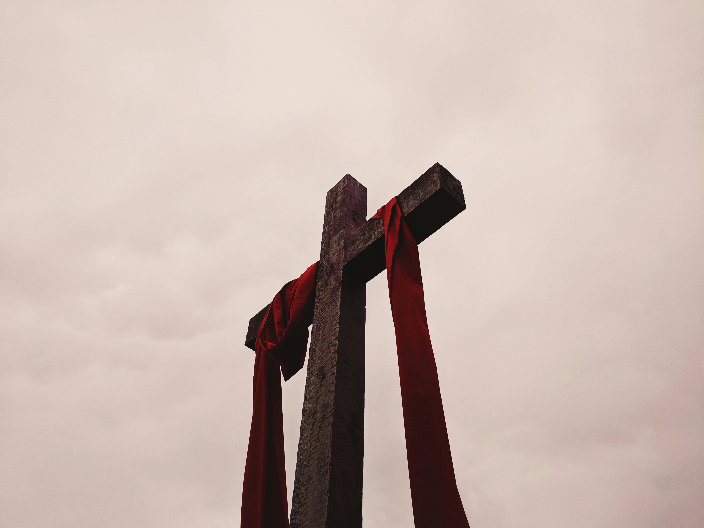

"Não se preocupem com nada, mas em todas as orações peçam a Deus o que vocês precisam e orem sempre com o coração agradecido. E a paz de Deus, que ninguém consegue entender, guardará o coração e a mente de vocês, pois vocês estão unidos com Cristo Jesus."
Filipenses 4:6-7Carregando...
Dentro da tradição batista, as cores assumem um papel simbólico significativo, representando os valores e crenças fundamentais compartilhadas por essa comunidade e encapsulando também os princípios centrais da fé cristã.
As cores - preto, vermelho, amarelo, verde e branco - carregam consigo significados simbólicos profundos, cada uma delas representando aspectos importantes da teologia e prática batista. Veja a seguir o que cada uma delas significa:
-
 Preto
PretoInicialmente, pode parecer uma escolha sombria, mas dentro da perspectiva batista, ele representa a realidade do pecado e da escuridão que permeiam o mundo. É um lembrete da necessidade de redenção e salvação em Jesus Cristo.
-

Vermelho
Simbolizando o sangue derramado de Cristo na cruz, é uma representação vívida do sacrifício supremo de Cristo pela humanidade. Essa cor destaca a centralidade da morte e ressurreição de Jesus como o cerne da fé cristã e a fonte de esperança para todos os crentes.
-
Amarelo
Brilhante e radiante, representa a luz do Evangelho. É um lembrete do chamado dos cristãos batistas para proclamar a mensagem redentora de Cristo a todas as nações, compartilhando a esperança e o amor de Deus com o mundo.
-
Verde
Simbolizando crescimento e renovação, representa o contínuo desenvolvimento espiritual e a busca por uma vida de discipulado e maturidade na fé. É um lembrete da importância do crescimento espiritual contínuo e da renovação na jornada cristã.
-
Branco
Representando pureza e santidade, destaca a aspiração dos batistas por uma vida de retidão e conformidade com os princípios divinos. É um lembrete da chamada para viver em santidade e refletir a luz de Cristo em um mundo necessitado.
- Quarta-feira: 19:30 - 21:00
- Sábado (Clube Bíblico): 14:00 - 16:00
- Domingo: 09:30 - 11:00 e 19:00 - 21:00
- Endereço: R. Jardim Olinda, 40 - Sítio Cercado, Curitiba - PR, 81935-020
- Telefone: (41) 99921-8701
- Redes sociais: Acesse nosso Facebook clicando aqui